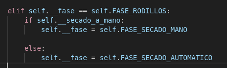
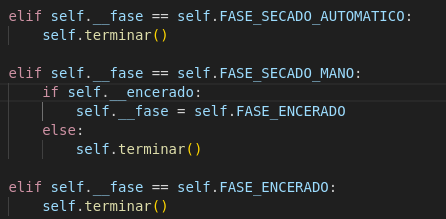
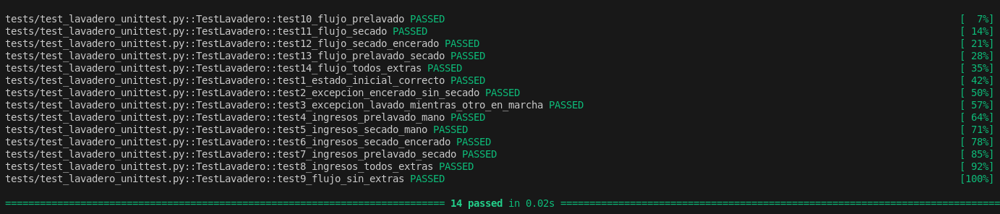

Ejecución de tests con pytest desde la línea de comandos
En esta sección se documenta cómo crear y usar un entorno virtual (venv) y cómo ejecutar los tests del proyecto utilizando pytest desde terminal con el comando PYTHONPATH=. pytest tests/test_lavadero_unittest.py -v.
Crear el entorno virtual
Desde la raíz del proyecto, crea un entorno virtual llamado venv con:
python3 -m venv venv
Este comando genera una carpeta venv/ con una instalación aislada de Python y sus paquetes.
Activar el entorno virtual
Cada vez que vayas a trabajar con el proyecto (instalar paquetes o lanzar tests), activa el entorno virtual:
source venv/bin/activate
Al activarlo, el intérprete y los paquetes que se usarán serán los de venv, no los del sistema.
Si aún no lo has hecho en este entorno, instala pytest una vez:
pip install pytest
Ejecutar el fichero de tests principal
Con el venv activado y situado en la raíz del proyecto, ejecuta el fichero de tests tests/test_lavadero_unittest.py con:
PYTHONPATH=. pytest tests/test_lavadero_unittest.py -v
Al finalizar, se mostrará un resumen con el número de tests ejecutados y cuántos han pasado o fallado.
Ciclo de depuración con pytest
Durante la corrección de errores el ciclo habitual es:
- Activar el entorno virtual (si no lo está):
source venv/bin/activate - Modificar el código de la aplicación o del test.
- Guardar los cambios.
- Volver a lanzar los tests con:
PYTHONPATH=. pytest tests/test_lavadero_unittest.py -v
De este modo validas rápidamente si los cambios han corregido el fallo sin necesidad de ejecutar toda la suite de tests completa.
Evidencias gráficas
A continuación se incluyen capturas relacionadas con la ejecución de tests, la aparición de fallos y sus soluciones.
Se asume que las imágenes están ubicadas en la carpeta docs/img/ del proyecto.
Fallo visto antes de empezar con los tests
El nombre del método estaba mal, y no se hace bien la llamada al método


Capturas de fallos en los tests


Al ejecutar el test por primera vez, dio varios errores que fueron solucionados, pero uno de esos errores, corregía otros 2 errores que había con el precio, por lo que al ejecutar por segunda vez los tests, salieron esos fallos

Capturas de y soluciones




Una vez el test se ejecuta varias veces, y se solucionan los errores que van surgiendo, obetenemos el resultado de los tests como PASSED
